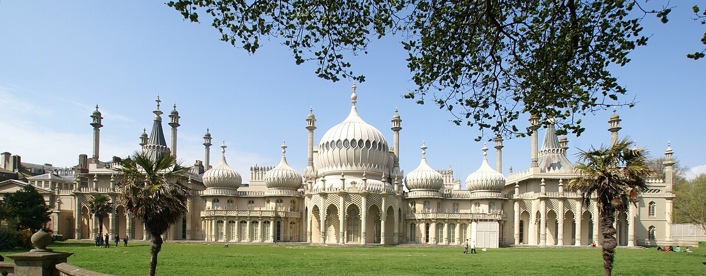

Featured
Discover Brighton's most beautiful green spaces and eco-friendly attractions, from stunning parks to historic landmarks
Discover fascinating art and history collections in this iconic museum.
Learn More
Brighton Palace Pier is a popular pier located in Brighton, England, known for its entertainment, attractions, and iconic status.
Learn MoreHome of the Stanford family, where the "upstairs-downstairs" life of Edwardian society comes alive.
Learn MoreYour personalized collection of Brighton's best places
Click the "Add to Favorites" button on any attraction to add it to your collection.